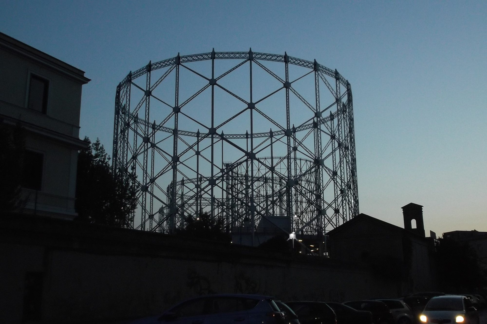

Il Diario · Servizio · 27 settembre 2026 · 3 min di lettura
Come vedere Full Gas: 403, tasto rosso, YouTube
Tre modi, tutti gratis. Il canale 403 del digitale terrestre con il tasto rosso, il canale YouTube dove escono speciali e pillole, e questo sito, dove ogni video si guarda nello stesso player del canale.

Full Gas è l'ottavo canale della rete Nexum, e la rete Nexum sta sul canale 403 del digitale terrestre. Ma il modo in cui ci si arriva è un po' diverso da un canale qualsiasi, quindi vale la pena scriverlo una volta per tutte.
1. Sul televisore: il 403 e il tasto rosso
- Sintonizza il canale 403. Qualsiasi televisore DVB-T2 riceve Nexum senza configurazioni aggiuntive: la tua antenna, nessuna parabola, nessun abbonamento.
- Connetti la TV a internet. Il sistema rileva la connessione e commuta in Full HD con i contenuti arricchiti. È l'HbbTV, la televisione ibrida: il segnale arriva dall'antenna, l'interattività da internet.
- Premi il tasto rosso. Si apre l'interfaccia Nexum, un menu che scorre sopra la diretta senza interromperla.
- Scendi fino all'ottava voce. Full Gas è l'ultima della rete. Il canale è in arrivo: il tasto rosso mostra sempre cosa va in onda su ciascun canale.
2. Su YouTube: il canale @FullGas403
Gli speciali, le pillole de Il Dettaglio e gli short escono su YouTube, sul canale @FullGas403. La premiere dello speciale al Gazometro è programmata per martedì 29 settembre alle 21:00: il video parte da solo, e prima si può entrare nella sala d'attesa. Iscriviti e attiva la campanella: YouTube ti avvisa un minuto prima.
3. Qui, sul sito
Nella videoteca ogni video si guarda dentro il sito, ma con il player ufficiale di YouTube: la visualizzazione conta sul canale, i commenti si lasciano là, e la playlist di tutti i video si aggiorna da sola. È il modo in cui teniamo insieme le due cose: chi ci guarda da qui ci aiuta a crescere là.
E il resto della rete
Sotto lo stesso numero ci sono gli altri sette canali Nexum: Nexum TV, Italian Horse TV, Salute24, XCapital, Controradio, Prime Event e Napoletano Style. Sei sono già in onda, e la diretta si vede anche online su nexumchannel.com.